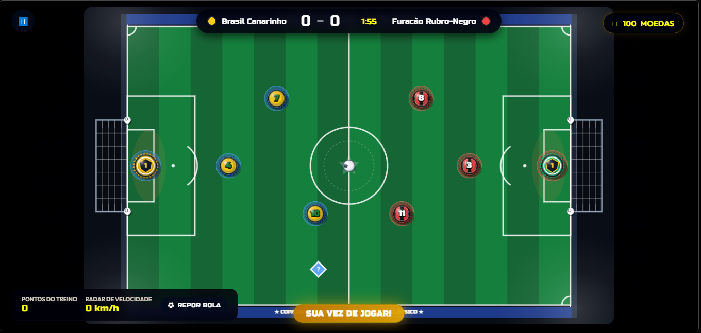
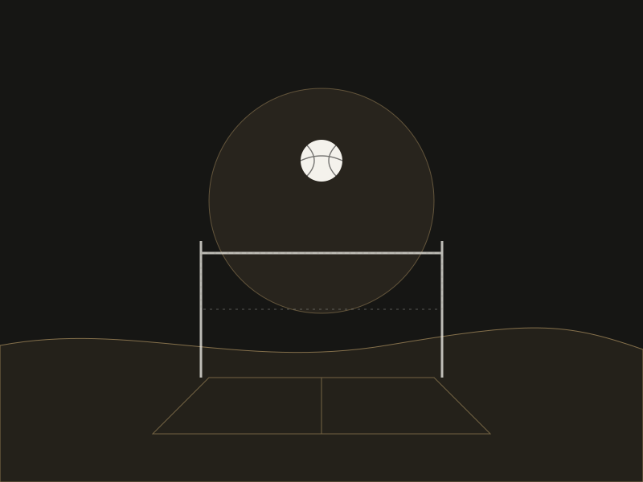
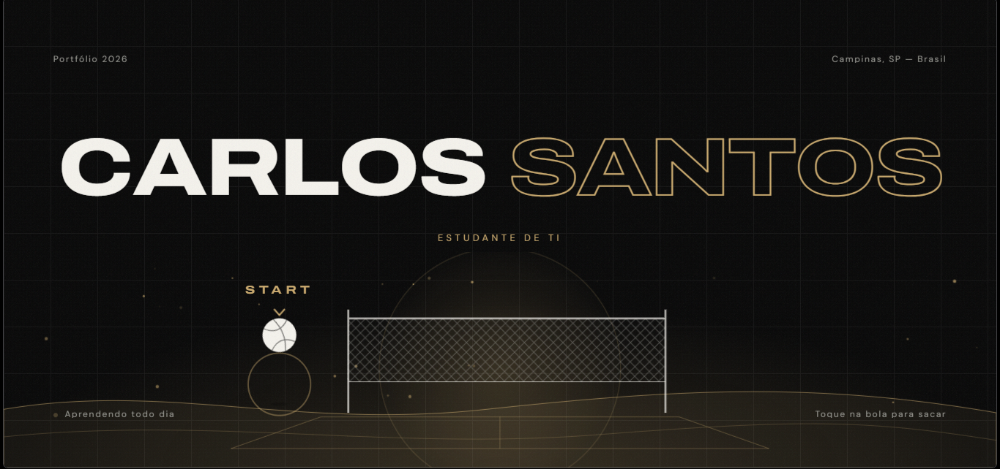

01
Futebol de Tampinha
Jogo de futebol de tampinha em 2D para jogar no navegador, com placar, cronômetro, moedas e modo treino.
Jogo 2D · Navegador
Ver no GitHubPortfólio 2026
Campinas, SP — Brasil
Aprendendo todo dia
Toque na bola para sacar
Estudante de TI
01 — Sobre
Sou o Carlos, estudante de Tecnologia da Informação em Campinas, SP. Estou construindo minha base em programação, design e desenvolvimento, aprendendo na prática com projetos próprios.
Fora da tela, gosto de futevôlei, de ver série e de passar tempo com a minha avó.

No futevôlei, saber onde estar antes de a bola chegar. No código, organizar o projeto antes de escrever a primeira linha.
O toque certo no momento certo. Na tela, uma animação que ajuda e não atrapalha.
Pé, peito, cabeça e muita repetição. Em TI, prática constante: aprender, testar e tentar de novo.
02 — Habilidades
03 — Projetos

Jogo de futebol de tampinha em 2D para jogar no navegador, com placar, cronômetro, moedas e modo treino.
Jogo 2D · Navegador
Ver no GitHub
Portfólio pessoal com tema de futevôlei: abertura interativa, transição de saque e animações em toda a página.
HTML · CSS · JavaScript
Ver no GitHub04 — Contato